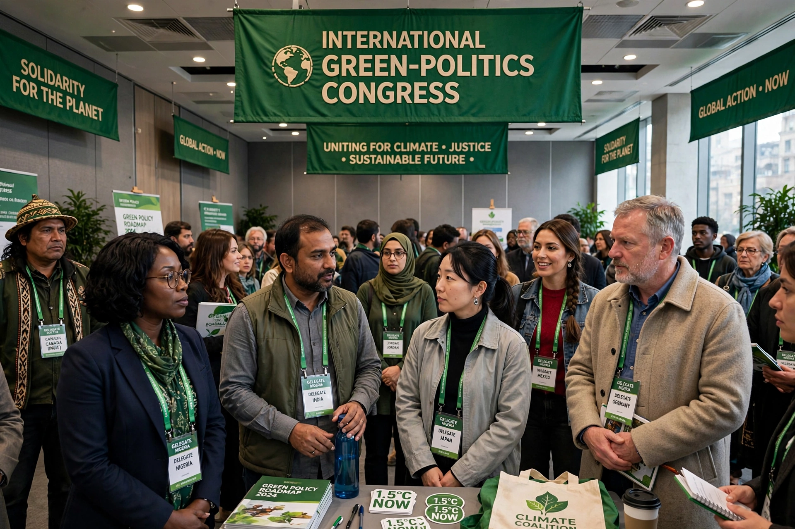

| Global Greens | |
|---|---|
| Founded | 2001, Canberra, Australia |
| Type | International political network |
| Membership | Green parties and movements in around 90 countries |
| Core values | Ecological wisdom, social justice, participatory democracy, nonviolence, sustainability, respect for diversity |
The Global Greens is an international network of political parties and movements which work to implement the Global Greens Charter. The network was founded in Canberra, Australia, in April 2001, when more than 800 delegates from green parties in 72 countries adopted the Charter — the first time the world's green parties had agreed on a common political platform.
The Global Greens Charter builds on the "four pillars" long associated with green politics and states six core values: ecological wisdom, social justice, participatory democracy, nonviolence, sustainability, and respect for diversity. Member parties commit to these principles and to cooperation on issues such as climate change, biodiversity loss, peace, and human rights.
The Global Greens links four regional federations: the European Green Party, the Federation of Green Parties of the Americas, the Asia-Pacific Greens Federation, and the African Greens Federation. A coordination committee drawn from the federations oversees the network between congresses. World congresses have been held in Canberra (2001), São Paulo (2008), Dakar (2012), Liverpool (2017, jointly with the European Green Party), and subsequent gatherings.
Member parties vary widely in strength. The German party Alliance 90/The Greens has served in national government, and green parties have held seats in parliaments across Europe, Latin America, and Australasia. The network also supports newer and smaller green movements in countries where they face political obstacles.
See also: Green politics, Green party, European Green Party